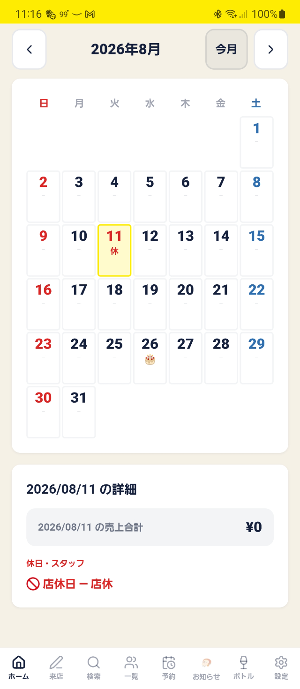
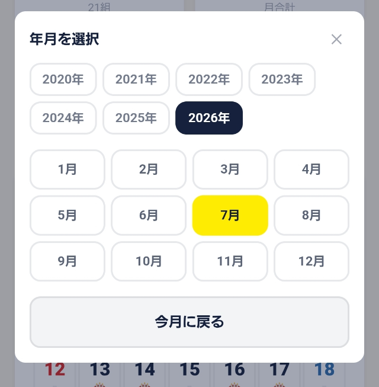

「＜」「＞」を何度も押さなくても、見たい年月に一気に移動できます。

カレンダー上部にある「2026年8月」のような文字を押します。

このようなポップアップが開きます。まず年のボタン（例：2026年）、続けて月のボタン（例：7月）を押します。
ポップアップが開くので、まず年のボタンを押し、続けて月のボタンを押します。
月を押した時点で、すぐにそのカレンダーに切り替わります。「今月に戻る」を押せば、いつでも今日の月にすぐ戻れます。